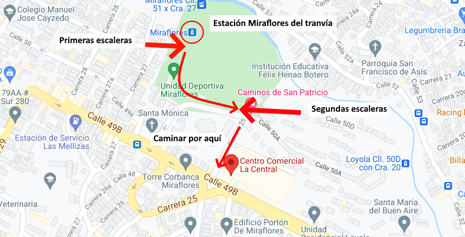

Nuestra iglesia se encuentra ubicada dentro del centro comercial La Central, es posible llegar utilizando el metro, a través del tranvía de Ayacucho, deberás bajarte en la estación Miraflores, de ahí, subir las escaleras que llevan a la cancha de miraflores y de ahí, subir las escaleras que salen a la carrera 25, caminar derecho por esa calle y hallarás el centro comercial.
Estamos ubicados dentro del centro comercial en el piso 6, salón de Ayacucho.
A continuación te mostramos una imagen donde se puede ver la ruta a tomar para llegar al bajarse de la estación Miraflores del tranvía.
